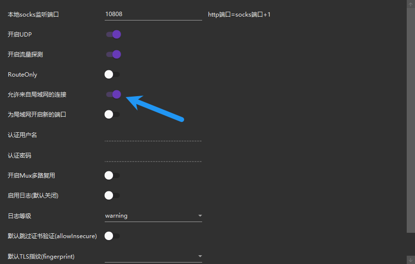

Jetson 等设备不会自动继承主机的代理规则
1 主机端代理设置
首先确保主机已搭建代理服务（如 v2ray 等），并记录代理服务器的 IP 地址和端口号。例如：
#查看本地主机ip(不是固定的)
ipconfig
#IPv4 地址
- 主机 IP：`192.168.3.68
- 代理端口：
10809（HTTP）或10808（SOCKS5）
1.1 检查代理端口是否监听（Windows 主机）
在 Windows PowerShell 中运行以下命令：
netstat -ano | findstr "10809"
- 如果输出中包含
0.0.0.0:10809或192.168.3.68:10809，说明代理服务正在运行并监听局域网。 - 如果只有
127.0.0.1:10809，说明代理仅限本地访问，需修改代理配置。
1.2 修改代理配置以允许局域网访问
根据你的代理软件（如 Clash、Shadowsocks、v2ray 等）：
- 打开代理软件的配置文件（通常是
.yaml或.json文件）。 - 找到监听地址（
bind-address或listen），将其改为：
# 允许所有 IP 访问
listen: 0.0.0.0:10809
或者
# 仅允许局域网访问
listen: 192.168.3.68:10809
这里我使用的 v2ray 代理,可以直接在设置中参数设置中允许局域网连接

- 重启代理服务。
1.3 安全设置
- 限制访问 IP：
在路由器或主机防火墙中，仅允许 Jetson 的 IP（如
192.168.3.170）访问10808/10809` 端口。 - 在管理员终端输入
# 允许 Jetson (192.168.3.170) 访问 HTTP 代理端口 10809
New-NetFirewallRule -DisplayName "Allow_Jetson_HTTP" -Direction Inbound -LocalPort 10809 -Protocol TCP -RemoteAddress 192.168.3.170 -Action Allow
# 允许 Jetson 访问 SOCKS5 代理端口 10808
New-NetFirewallRule -DisplayName "Allow_Jetson_SOCKS5" -Direction Inbound -LocalPort 10808 -Protocol TCP -RemoteAddress 192.168.3.170 -Action Allow
- 验证规则
`# 查看已创建的规则
Get-NetFirewallRule -DisplayName "Allow_Jetson_*" | Format-Table DisplayName,Enabled,Action,Direction,RemoteAddress`
- 应输出
DisplayName Enabled Action Direction RemoteAddress
----------- ------- ------ --------- -------------
Allow_Jetson_SOCKS5 True Allow Inbound 192.168.3.170
Allow_Jetson_HTTP True Allow Inbound 192.168.3.170
- 完成设置后，只有 Jetson 设备能使用你的代理，其他 IP 访问会被拒绝，安全性大幅提升！
2 Jetson 端设备配置
2.1 系统级代理设置
- 图形界面设置
- 进入 Ubuntu 的“设置” → “网络” → “网络代理”，选择“手动”模式。 - 填写主机的代理 IP 和端口（如 HTTP/HTTPS 代理均设为 `192.168.3.68:10809`），保存并应用。 - *注意*：此方法仅影响图形界面应用（如浏览器），终端仍需单独配置。-
全局环境变量配置
- 编辑
/etc/environment文件，添加以下内容（需管理员权限）：
- 编辑
-
http_proxy="http://192.168.3.68:10809"
https_proxy="http://192.168.3.68:10809"
no_proxy="localhost,127.0.0.1"
source /etc/environment
# 执行或重启生效。
适用场景：所有用户和终端命令（如 apt、curl）均通过代理。
代理环境变量虽然已写入
/etc/environment，但并未被当前 Shell 会话加载 所以建议重启 Jetson 设备,这会强制重新加载所有系统环境变量（包括/etc/environment中的代理配置）
2.2 终端临时代理（仅当前会话有效）
在终端中临时设置代理:
export http_proxy=http://192.168.3.68:10809
export https_proxy=http://192.168.3.68:10809
配置 HTTP 代理:
git config --global http.proxy http://192.168.3.68:10809
git config --global https.proxy http://192.168.3.68:10809
取消代理配置:
git config --global --unset http.proxy
git config --global --unset https.proxy
3 测试代理效果
- 在 Jetson 终端上测试输入
curl -x http://192.168.3.68:10809 -I https://www.google.com
如果返回 HTTP/2 200，说明代理已生效
- 测试无显示代理的 curl
curl -v http://www.google.com
预期结果：
显示代理连接日志（如 Connecting to 192.168.3.68:10809…）